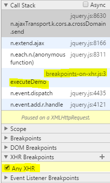

Breakpoints on XHR is a useful way of simply making Chrome stop when a web request is made to a web api or similar.
XHR breakpoints are conditional by default which is extremely useful if you have a large application and don't want to step through controller -> service -> whatever -> XHR request. You can simply say "break when the URL contains 'blah'".
You can make XHR breakpoints catch all XHR requests by specifying no url to match on.
Breakpoint by XHR does have some gotchas - for example, with jQuery it lands you in the jQuery function that makes XHR requests rather than your custom logic. Unfortunately, not even blackboxing scripts like jQuery affects this behaviour. However, that's what the stack trace is for.
Example stack trace:

Highlighted is the actual method call where the xhr request was made and quickly showing that I had Any XHR requests captured.